Edgar Allen Poe
Edgar Allan Poe, (born January 19, 1809, Boston, Massachusetts, U.S.—died October 7, 1849, Baltimore, Maryland), American short-story writer, poet, critic, and editor who is famous for his cultivation of mystery and the macabre. His tale “The Murders in the Rue Morgue” (1841) initiated the modern detective story, and the atmosphere in his tales of horror is unrivaled in American fiction. His “The Raven” (1845) numbers among the best-known poems in the national literature.
Notable Works - The Raven, The Tell Tale Heart, The Black Cat, The Fall of the House of Usher
Enclyclopedia Britannica

The Tell Tale Heart
The Tell-Tale Heart, short Gothic horror story by Edgar Allen Poe, published in The Pioneer in 1843.
Poe’s tale of murder and terror, told by a nameless homicidal madman, influenced later stream-of-consciousness fiction and helped secure the author’s reputation as master of the macabre.
Enclyclopedia Britannica
Click here for full poem!The Raven
The Raven, best-known poem by Edgar Allan Poe, published in 1845 and collected in The Raven and Other Poems the same year. Poe achieved instant national fame with the publication of this melancholy evocation of lost love.
On a stormy December midnight, a grieving student is visited by a raven who speaks but one word, “Nevermore.” As the student laments his lost love Lenore, the raven’s insistent repetition of the word becomes an increasingly harrowing response to the student’s own fears and longing.
Enclyclopedia Britannica
Click here for full poem!